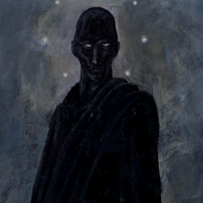
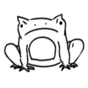
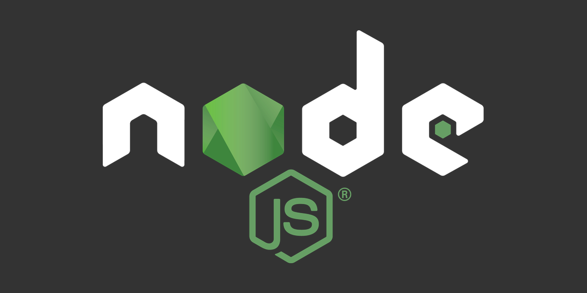
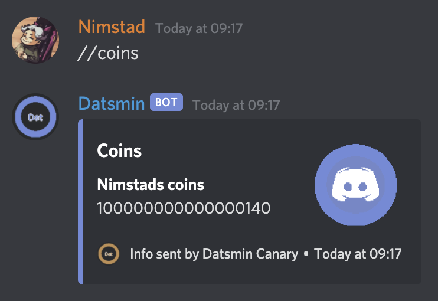

One bot. Doing (soon) (hopefully) everything. Developed by:
Nimstad
#3874

Suj
#7430

Froggers
#2091

Built with Node
Node is an open source java script wrapper which was released in 2009. Today node has built quite a following and is used by developers all over the world to build amazing webapps. Node is also very similar in design to other wrappers such as the python wrapper Twisted.

Coin system
Datsmin rewards users for bieng active and talking in your server, the more you talk the more you earn. With coins you are able to purchase perks either universal across all servers or for the one you are in right now.